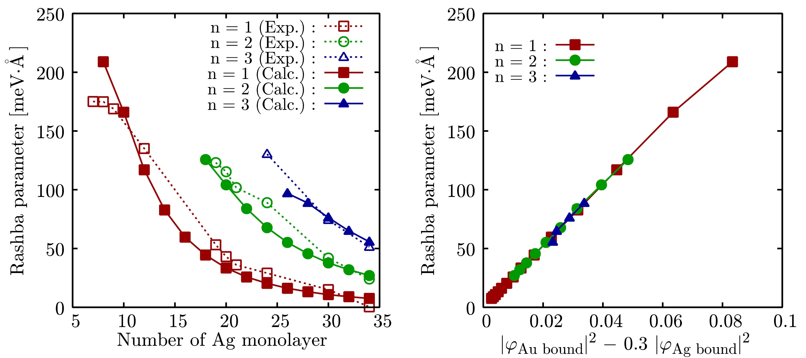

表面・界面・単層系/Surface・Interface・Monolayer
ボロフェンにおけるディラック電子
有効質量ゼロの電子(ディラック電子)を持つ物質は、極めて動作周波数の高いエレクトロニクスデバイスへの応用が期待されており、盛んに研究が進められている。
物性研究所のフェンらは、Ag（111）面上に成長させたホウ素の単原子層からなる新物質「ボロフェン」に対する角度分解光電子分光でディラック電子を見出した。
ディラック電子はこれまで、グラフェンのような蜂の巣構造を持つ物質で多く見つかってきたが、ホウ素は価電子数の違いから炭素のように蜂の巣構造を取ることが出来ない。
我々は第一原理シミュレーションにより、このディラック電子が特定のホウ素原子を避けて、あたかも蜂の巣構造の上を移動するかのような性質を示す事を明らかにした。
この研究は、「ボロフェン」が新たな電子デバイスの材料候補として有力である事を明らかにしただけでなく、蜂の巣以外の構造を持つ、より多種多様な物質の中から新しくディラック電子を見出す事ができる可能性を示唆している [1]。
- Dirac Fermions in Borophene
B. Feng, O. Sugino, R. Liu, J. Zhang, R. Yukawa, M. Kawamura,
T. Iimori, H. Kim, Y. Hasegawa, H. Li, L. Chen, K. Wu,
H. Kumigashira, F. Komori, T. Chiang, S. Meng, and I. Matsuda,
Phys. Rev. Lett. 118, 096401 (2017);
arXiv:1702.00592.
Ag/Au(111)における量子井戸状態のラシュバ効果に対する微視的理論
金属の表面近傍等でのポテンシャル・電子軌道の非対称性とスピン-軌道相互作用によって一電子準位がスピン分裂するラシュバ効果は、スピントロニクスにおけるスピン流の生成・検出等への応用が期待されており、様々な物質・構造での発現が調べられている。
共同研究者(野口、黒田、近藤)らによるスピン・角度分解光電子分光で発見されたAg/Au(111)におけるラシュバ効果において、分裂幅が膜厚と量子井戸準位に強く依存する原因を密度汎関数理論に基づく第一原理計算によって調べた[2]。
計算で得られたラシュバ係数は実験値と定量的に一致しており、我々の計算は実験での状況をよく再現している。また、我々はラシュバ係数の膜厚・量子井戸準位依存性の起源を調べるために、量子井戸状態の包絡線の界面鉛直方向の変化に着目し、さらなる解析を行った。
その結果この依存性は、Au/Ag界面でのそれぞれの原子の位置における電子軌道の振幅の変化によって説明できることが明らかにされた。

- Scaling law for the Rashba-type spin splitting in quantum well films
R. Noguchi, K. Kuroda, M. Kawamura, K. Yaji, A. Harasawa, T. Iimori, S. Shin, F. Komori, T. Ozaki, T. Kondo,
Phys. Rev. B 104, L180409 (2021);
arXiv:2012.11289.
- Theory of Rashba splitting in quantum-well states
M. Kawamura, T. Ozaki,
arXiv:2407.05091.